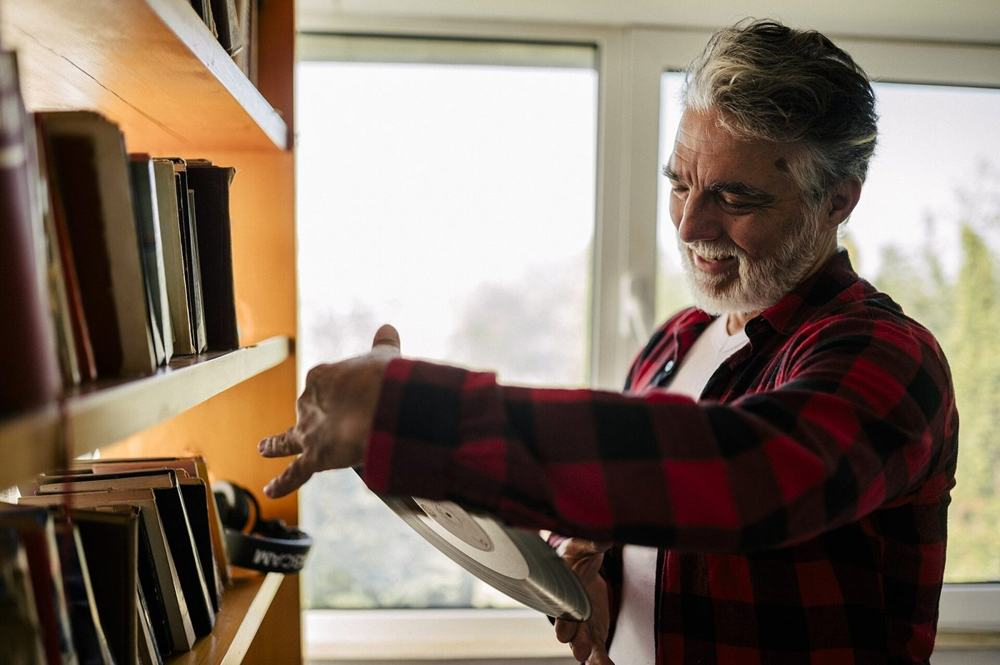
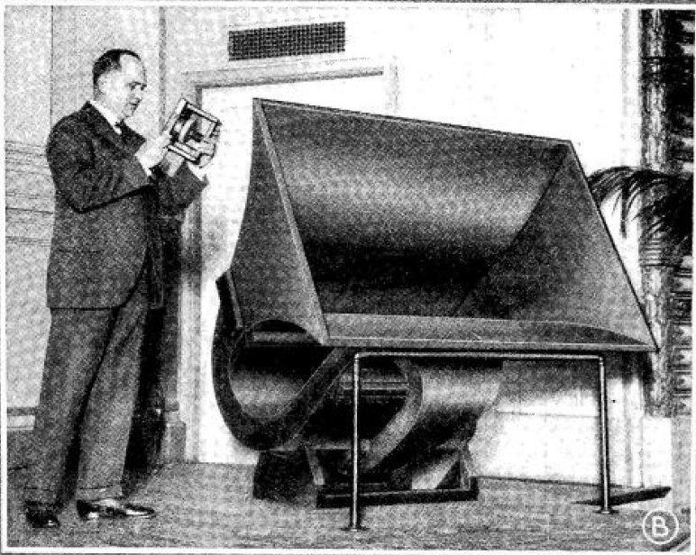

故事
有一種咖啡館，進去以後最好不要講話。它叫爵士喫茶，日本最早的一家，據說1929 年開在東京。戰後的日本，一張進口黑膠唱片非常昂貴。
年輕人買不起，就花一杯咖啡的錢，坐下來聽。店裡有很大的喇叭和上千張唱片，由老闆選片。很多店規定，聽音樂的時候不准聊天。

正在播的那張唱片封面，會擺在櫃台上讓大家看。五六十年代，日本各地據說有上百家爵士喫茶。現在倫敦、紐約，也開了學日本的聽音樂酒吧。下次去日本，找一家爵士喫茶，安靜坐一個小時。
故事後面
爵士喫茶是日本特有的文化。據說最早一家在一九二九年開在東京，五六十年代最盛。
那時進口唱片很貴，年輕人花一杯咖啡的錢，就能坐在大喇叭前聽老闆挑的唱片。很多店規定不准聊天。
這種「專心聽」的文化，近年影響了倫敦、紐約的聽音樂酒吧。

這樣聽
找一個安靜的晚上，像在爵士喫茶一樣，從頭到尾不說話地聽完。
逐句英文
There is a kind of café where you had better not talk.
It is the jazz kissa; the first one reportedly opened in Tokyo in 1929.
In postwar Japan, an imported LP was very expensive.
Young people who couldn't afford them paid for a coffee and sat down to listen.
The shops had huge speakers and thousands of records, chosen by the owner.
Many had a rule: no chatting while the music plays.
The cover of the record playing is set out on the counter for all to see.
In the 1950s and 60s, Japan reportedly had hundreds of jazz kissa.
Today London and New York have listening bars modeled on them.
Next time you're in Japan, find a jazz kissa and sit quietly for an hour.
查證筆記與出處
Gemini 稿寫「一九五零年代開始」已改。第一家年份與店名（Blackbird）為條目寫法，寫據說。店家數量各說法不同，寫據說、不寫精確數字。
一分鐘影片版在 Instagram @jazz101tw。